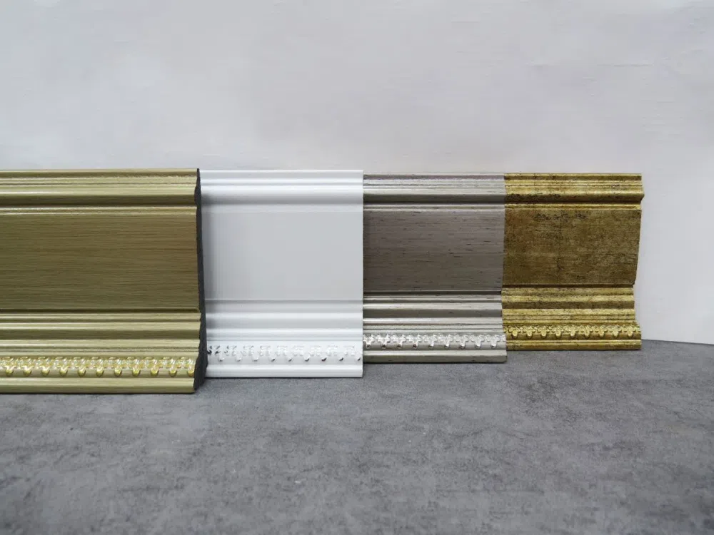

آقای پارکتاستودیو معماری شاهرخ خانلی
همه محصولات
PVC BASEBOARD
قرنیز PVC
مجموعهای از قرنیزهای PVC ساده، کلاسیک، طرح چوب و مدلهای باریک برای هماهنگی با کف و دکوراسیون داخلی.
۴ مجموعه · ۵۲ تصویرSELECTED MODELS
مدلها و رنگبندی
مدلهای مشابه در یک مجموعه قرار گرفتهاند. برای دیدن تمام رنگها و جزئیات روی کارت کلیک کنید.